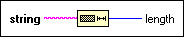

String Length Function
Owning Palette: String Functions
Requires: Base Development System
Returns in length the number of characters (bytes) in string.
The connector pane displays the default data types for this polymorphic function.

 Add to the block diagram Add to the block diagram |
 Find on the palette Find on the palette |